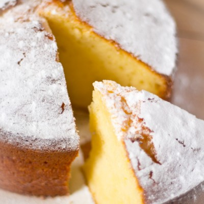

- Verwarm de oven voor op 180°C en bekleedt de cakevorm (afmetingen ongeveer 20x11x7,5cm) met bakpapier.
- Scheidt het eigeel van het eiwit en doe het eigeel in een grote kom, hier worden straks alle ingrediënten aan toegevoegd. Het eiwit moet straks opgeklopt worden, dus doe dit niet in een te kleine kom.
- Klop met een handmixer het eiwit met de helft van het zout, totdat het egaal wit is. Voeg dan de helft van de erythritol toe en klop het mengsel stijf totdat er pieken ontstaan.
- Voeg de yoghurt, olijfolie, de rest van de erythritol, citroen rasp, vanille extract, bakpoeder en de rest van het zout toe aan het eigeel en meng dit met een handmixer totdat er een homogeen mengel ontstaat.
- Met een schone spatel voeg je, wederom in kleine hoeveelheden, het geklopte eiwit voorzichtig bij het eigeel mengsel. Schep rustig het geheel om totdat alles goed gemengd is. Deze methode zorgt voor een luchtige cake!
- Doe het mengel in de cakevorm en bak de cake ongeveer 50 minuten. Je kan checken of de cake klaar is door een schone saté-prikker erin te prikken. Als deze droog uit de cake komt, is de cake klaar.
< < Terug naar de Mediterraan Recepten
|
 |